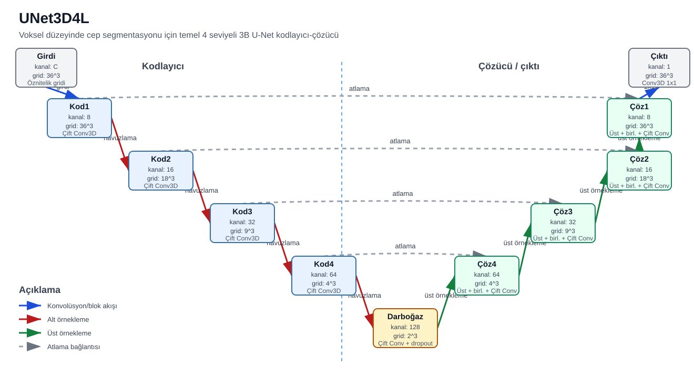
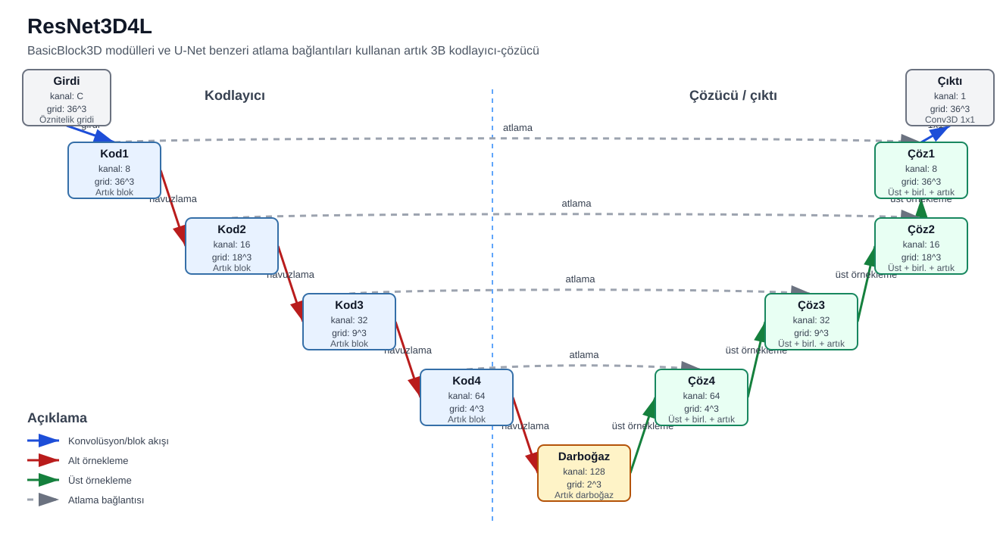
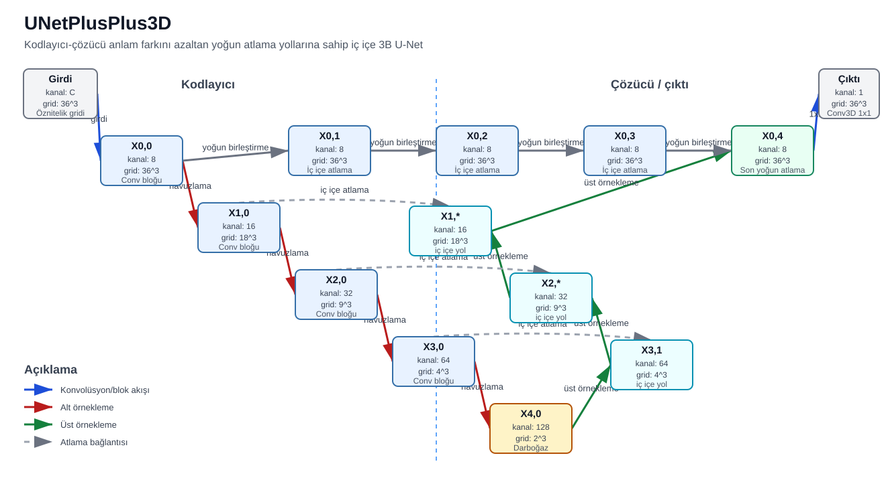
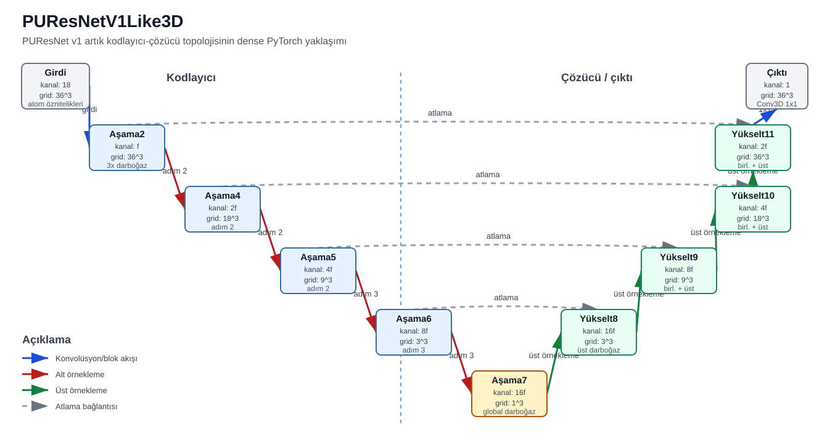
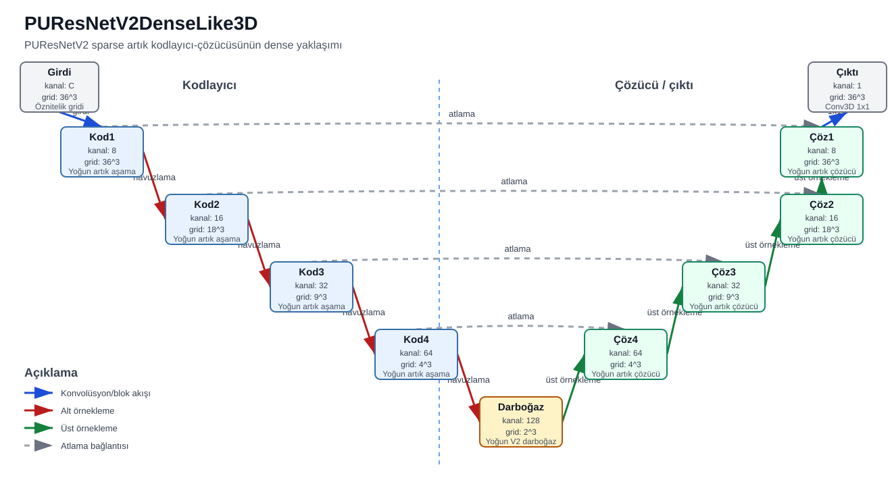
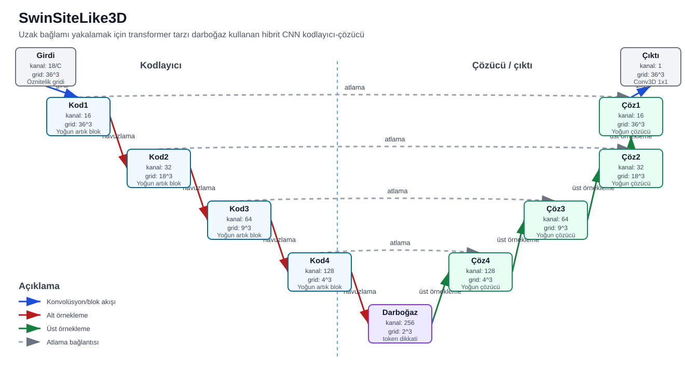

UNet3D4L
Voksel düzeyinde cep segmentasyonu için temel 4 seviyeli 3B U-Net kodlayıcı-çözücü

UNet3D4LA
Çözümleme öncesinde atlama özniteliklerini süzen dikkat kapılı 4 seviyeli 3B U-Net
ResNet3D4L
BasicBlock3D modülleri ve U-Net benzeri atlama bağlantıları kullanan artık 3B kodlayıcı-çözücü

UNetPlusPlus3D
Kodlayıcı-çözücü anlam farkını azaltan yoğun atlama yollarına sahip iç içe 3B U-Net

CBAMUNet3D
Her blokta CBAM kanal ve uzamsal dikkat kullanan artık 3B U-Net
ResNet3D4LGN
Küçük batch koşullarında kararlılık için GroupNorm kullanan ResNet3D4L tarzı mimari
TinyConvNeXtUNet3D
Depthwise konvolüsyon blokları kullanan hafif ConvNeXt tarzı 3B U-Net
KalasantyUNet3D
2, 2, 3, 3 havuzlama düzenine sahip Kalasanty tarzı 3B U-Net
PUResNetV1Like3D
PUResNet v1 artık kodlayıcı-çözücü topolojisinin dense PyTorch yaklaşımı

PUResNetV2DenseLike3D
PUResNetV2 sparse artık kodlayıcı-çözücüsünün dense yaklaşımı

SwinSiteLike3D
Uzak bağlamı yakalamak için transformer tarzı darboğaz kullanan hibrit CNN kodlayıcı-çözücü
